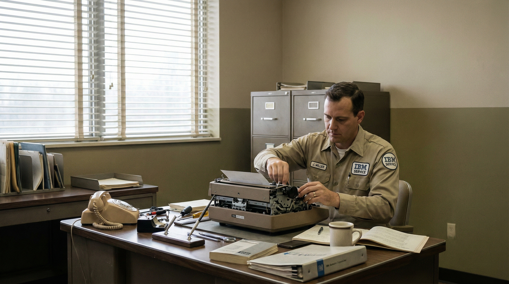

Technical Assistance
Scheduled maintenance can be arranged to inspect key mechanisms, clean internal components, and check print quality. This reduces unexpected breakdowns and extends the life of each unit.
Reliable assistance for maintenance, parts, and day-to-day operation of your Selectric fleet.
Every Selectric installation is backed by trained technicians who understand both the machine and the demands of a modern office. From routine cleaning to complex adjustments, service is designed to keep your typists working at full speed and efficiently.

Scheduled maintenance can be arranged to inspect key mechanisms, clean internal components, and check print quality. This reduces unexpected breakdowns and extends the life of each unit.
Genuine typeballs, ribbons, platens, and other parts are available through authorized dealers. Using original components helps maintain consistent performance across all machines.
On-site demonstrations introduce staff to the Selectric’s features and proper care techniques. Short training sessions ensure typists quickly take advantage of the new equipment.
Contact your local office equipment representative to arrange routine maintenance.
Standard and specialty ribbons, along with additional typeballs, can be ordered in bulk.
Set up a demonstration session to compare Selectric performance with older typewriter models.